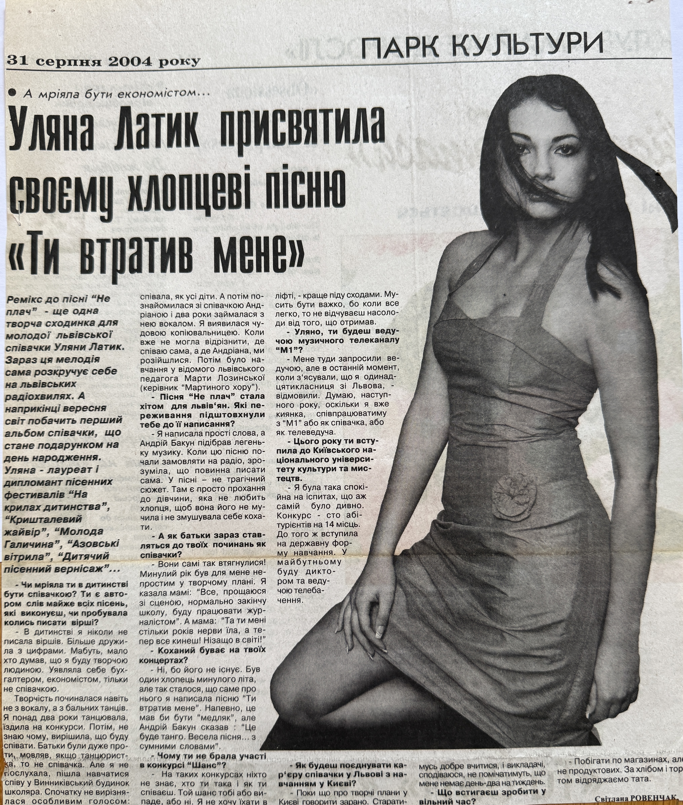

| Title | Uliana Latyk Dedicated the Song “You Lost Me” to Her Boyfriend |
| Original Title | Уляна Латик присвятила своєму хлопцеві пісню «Ти втратив мене» |
| Material Type | Newspaper Interview |
| Featured Artist | Uliana Latyk |
| Publication | Vysokyi Zamok (Високий Замок) |
| Section | Park Kultury (Парк культури) |
| Publication Date | 31 August 2004 |
| Language | Ukrainian |

On 31 August 2004, the Ukrainian newspaper Vysokyi Zamok (Високий Замок) published an interview by Svitlana Rovenchak with Uliana Latyk, titled “Уляна Латик присвятила своєму хлопцеві пісню «Ти втратив мене»” (“Uliana Latyk Dedicated the Song “You Lost Me” to Her Boyfriend”).
The article discusses her musical journey, vocal education, festival achievements, songwriting, admission to the Kyiv National University of Culture and Arts, and her future artistic ambitions. It also highlights her song “Ти втратив мене” (“You Lost Me”), with lyrics written by Uliana Latyk and music composed by Andrii Bakun.
The publication documents an early stage of Uliana Latyk’s artistic career, before she adopted the stage name Ana Danch.
| Archive Category | Press Publication |
| Name at the Time of Publication | Uliana Latyk |
| Current Stage Name | Ana Danch |
| Archive Reference | Newspaper Interview (2004) |
| Country | Ukraine |
| Author | Svitlana Rovenchak |
| Publication | Vysokyi Zamok (Високий Замок) |
| Section | Park Kultury (Парк культури) |
| Publication Date | 31 August 2004 |
Newspaper: Vysokyi Zamok (Високий Замок); section: Park Kultury (Парк культури); publication date: 31 August 2004.
This archival record preserves bibliographic information about the newspaper interview and its surviving scan.